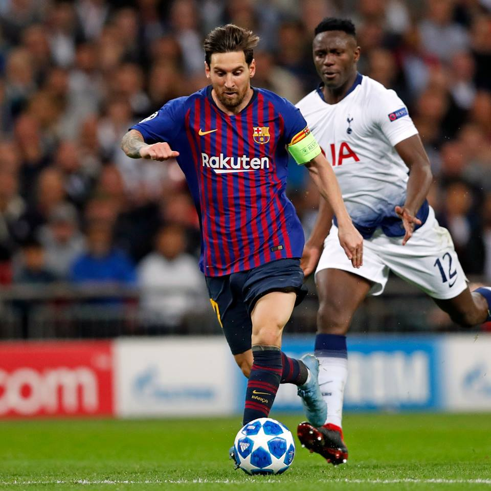

Player Stat
- Lionel Messi
- Christiano Ronaldo
- Neymar
Lionel Messi

Lionel Messi, one of the greatest soccer players of all time, is still leading the domain of the world of soccer in his year of 31.
His tecniques has not shown sings of pecrepitude, which means he is still the best soccer player in the world.
Although he missed several matches because of his injury, he is still ranked in the first place of the leading scorer in the league(15 goals), and he is also ranked in the second place of the leading scorer in the Champions League(6 goals).
He is still presenting us magical moments, and he continues his journey to reach the legendary records.
And as he announced in front of FC Barcelona fans, his goal is to win the Champions League and bring the 'Big Ear' back to Barcelona.
So it will be fascinating to watch his challenge to win the Europian Champions League.
His first opponent is Olympique Lyon of the French League.
As many fans expected the superiority of FC Barcelona, I guess Messi would focus on the next round, which is Quarter Final, the round he couldn't overcome for the last 3 years.
Could Messi fulfill his desire to win the Champions League this year?
Stats
- League-La Liga : 16goals 10assists in 16games
- Champions League: 6goals 1assist in 4games